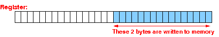

Constant offset and
variable offset
A constant offset is an offset value that can be computed at compile time
Example: when you write A[5] in a program
The offset of A[5] can be computed by the compiler.
Constant offset and
variable offset
A variable offset is an offset value that is a not known at compile time
Example: when you write A[k] in a program

The offset of A[k] can only be computed when the program is running !!!
The
ldrsb rN,[rM,#n]
instruction
Syntax and meaning of the ldrsb rN, [rM, #n] instruction:
ldrsb rN, [rM, #n] Load 1 byte from memory at the address given by rM + n into the (destination) register rN AND convert it into int (32 bits) representation The byte is stored at the right rN and then it is sign extended to 32 bits: |

The ldrsb rN, [rM, #n] is used to fetch byte typed array elements A[constant-index] (e.g.: A[4]) from memory
ldrsb rN, [rM, #n]
explained
graphically
The ldrsb r1,[r0,#3] instruction loads the byte variable at address r0+3 into reg r1:
The byte is then converted into a 32 bits 2s complement representation -- DO EXAMPLE
The
strb rN,[rM,#n]
instruction
Syntax and meaning of the strb rN, [rM, #n] instruction:
strb rN, [rM, #n] Store 1 byte from register rN into memory at the address given by rM + n The byte is taken from the right of rN: |

The strb rN, [rM, #n] is used to update byte typed array elements A[constant-index] (e.g.: A[4]) in memory
strb rN, [rM,#n]
explained
graphically
The strb r1,[r0,#3] instruction stores the byte in register r1 in memory at address r0+3:
The strb r1,[r0,#3] instruction will cast the 32 bits value in register R1 into a byte !!
The
ldrsb
rN,[rM,rk]
instruction
Syntax and meaning of the ldrsb rN, [rM, rk] instruction:
ldrsb rN, [rM, rk] Load 1 byte from memory at the address given by rM + rk into the (destination) register rN AND convert it into int (32 bits) representation The byte is stored at the right rN and then it is sign extended to 32 bits: |
The ldrsb rN, [rM, rk] is used to fetch byte typed array elements A[variable-index] (e.g.: A[j]) from memory
ldrsb rN, [rM,rk]
explained
graphically
The ldrsb r2,[r0,r1] instruction loads the byte variable at address r0+r1 into reg r2:
The byte is then converted into a 32 bits 2s complement representation
The
strb rN,[rM,rk]
instruction
Syntax and meaning of the strb rN, [rM, rk] instruction:
strb rN, [rM, rk] Store 1 byte from register rN into memory at the address given by rM + rk The byte is taken from the right of rN: |
The strb rN, [rM, rk] is used to update byte typed array elements A[variable-index] (e.g.: A[j]) in memory
strb rN, [rM,rk]
explained
graphically
The strb r2,[r0,r1] instruction stores the byte in register r2 in memory at address r0+r1:
The strb r2,[r0,r1] instruction will cast the 32 bits value in register R2 into a byte !!
The
ldrsh
rN,[rM,#n]
instruction
Syntax and meaning of the ldrsh rN, [rM, #n] instruction:
ldrsh rN, [rM, #n] Load 2 bytes from memory at the address given by rM + n into the (destination) register rN AND convert it into int (32 bits) representation The 2 bytes are stored at the right rN and then it is sign extended to 32 bits: |

The ldrsh rN, [rM, #n] is used to fetch short typed array elements A[constant-index] (e.g.: A[4]) from memory
ldrsh rN, [rM, #n]
explained
graphically
The ldrsh r1,[r0,#4] instruction loads the short variable at address r0+4 into reg r1:
The short is then converted into a 32 bits 2s complement representation -- DO EXAMPLE
The
strh rN, [rM, #n]
instruction
Syntax and meaning of the strh rN, [rM, #n] instruction:
strh rN, [rM, #n]
Store 2 bytes from register rN into memory
at the address given by rM + n
The 2 bytes are taken from the right of rN:

|
The strh rN, [rM, #n] is used to update short typed array elements A[constant-index] (e.g.: A[4]) in memory
strh rN, [rM,#n]
explained
graphically
The strh r1,[r0,#4] instruction stores the short in register r1 in memory at address r0+4:
The strh r1,[r0,#4] instruction will cast the 32 bits value in register R1 into a short !!
The
ldrsh rN,[rM,rk]
instruction
Syntax and meaning of the ldrsh rN, [rM, rk] (from memory) instruction:
ldrsh rN, [rM, rk] Load 2 bytes from memory at the address given by rM + rk into the (destination) register rN AND convert it into int (32 bits) representation The 2 bytes are stored at the right rN and then it is sign extended to 32 bits: |
The ldrsh rN, [rM, rk] is used to fetch short typed array elements A[variable-index] (e.g.: A[j]) from memory
ldrsh rN, [rM,rk]
explained
graphically
The ldrsh r2,[r0,r1] instruction loads the short variable at address r0+r1 into reg r2:
The short is then converted into a 32 bits 2s complement representation
The
strh rN,[rM,rk]
instruction
Syntax and meaning of the strh rN, [rM, rk] instruction:
strh rN, [rM, rk]
Store 2 bytes from register rN into memory
at the address given by rM + rk
The 2 bytes are taken from the right of rN:
|
The strh rN, [rM, rk] is used to update short typed array elements A[variable-index] (e.g.: A[i]) in memory
strh rN, [rM,rk]
explained
graphically
The strh r2,[r0,r1] instruction stores the short in register r2 in memory at address r0+r1:
The strh r2,[r0,r1] instruction will cast the 32 bits value in register R2 into a short !!
The
ldr rN,[rM,#n]
instruction
Syntax and meaning of the ldr rN, [rM, #n] instruction:
ldr rN, [rM, #n] Load 4 bytes from memory at the address given by rM + n into the (destination) register rN |

The ldr rN, [rM, #n] is used to fetch int typed array elements A[constant-index] (e.g.: A[4]) from memory
ldr rN, [rM, #n]
explained
graphically
The ldr r1,[r0,#4] instruction loads the int variable at address r0+4 into reg r1:
(There is no need to perform a conversion operation...) -- DO EXAMPLE
The
str rN,[rM,#n]
instruction
Syntax and meaning of the str rN, [rM, #n] instruction:
str rN, [rM, #n] Store 4 bytes from register rN into memory at the address given by rM + n The 4 bytes comprise of the entire register rN: |

The str rN, [rM, #n] is used to update int typed array elements A[constant-index] (e.g.: A[4]) in memory
str rN, [rM,#n]
explained
graphically
The str r1,[r0,#4] instruction stores the int in register r1 in memory at address r0+4:

(There is no need to perform a casting operation...)
The
ldr rN,[rM,rk]
instruction
Syntax and meaning of the ldr rN, [rM, rk] instruction:
ldr rN, [rM, rk] Load 4 bytes from memory at the address given by rM + rk into the (destination) register rN |
The ldr rN, [rM, rk] is used to fetch int typed array elements A[variable-index] (e.g.: A[i]) from memory
ldr rN, [rM,rk]
explained
graphically
The ldr r2,[r0,r1] instruction loads the int variable at address r0+r1 into reg r2:
(There is no need to perform a conversion operation...)
The
str rN,[rM,rk]
instruction
Syntax and meaning of the str rN, [rM, rk] instruction:
str rN, [rM, rk] Store 4 bytes from register rN into memory at the address given by rM + rk The 4 bytes comprise of the entire register rN: |
The str rN, [rM, rk] is used to update int typed array elements A[variable-index] (e.g.: A[i]) in memory
str rN, [rM,rk]
explained
graphically
The str r2,[r0,r1] instruction stores the int in register r2 in memory at address r0+r1:
(There is no need to perform a casting operation...)
Syntax summary
ldrsb rN, [rM, #n] // Load byte data from mem addr rM + n ldrsb rN, [rM, rk] // Load byte data from mem addr rM + rk ldrsh rN, [rM, #n] // Load short data from mem addr rM + n ldrsh rN, [rM, rk] // Load short data from mem addr rM + rk ldr rN, [rM, #n] // Load int data from mem addr rM + n ldr rN, [rM, rk] // Load int data from mem addr rM + rk strb rN, [rM, #n] // Store byte data to mem addr rM + n strb rN, [rM, rk] // Store byte data to mem addr rM + rk strh rN, [rM, #n] // Store short data to mem addr rM + n strh rN, [rM, rk] // Store short data to mem addr rM + rk str rN, [rM, #n] // Store int data to mem addr rM + n str rN, [rM, rk] // Store int data to mem addr rM + rk |
Didactic comment
|